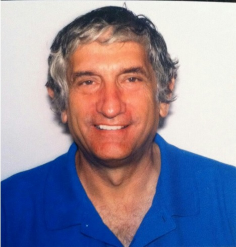
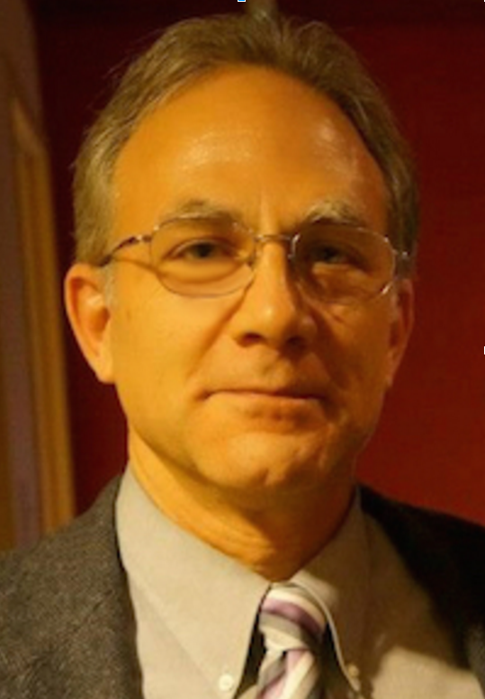
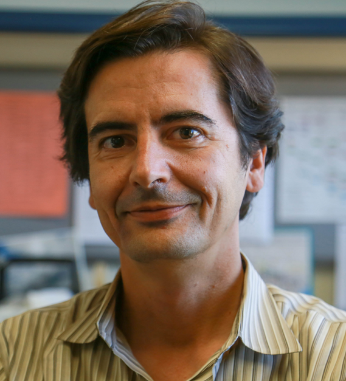
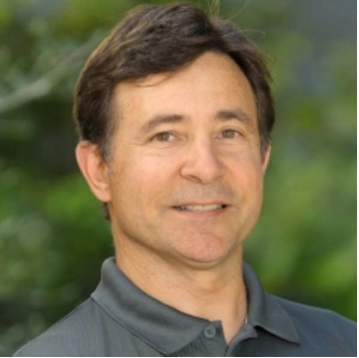
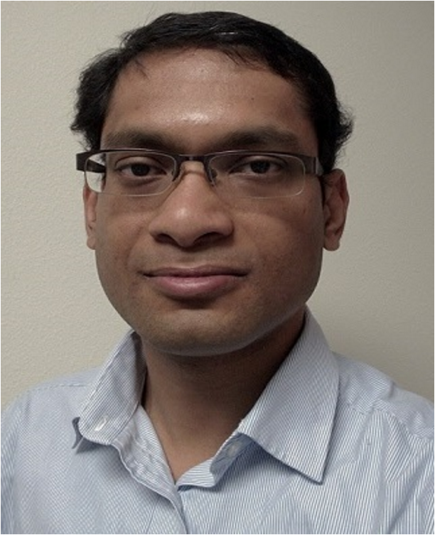

|  | John Martinis Physics Department, UC Santa Barbara and Google Research -Quantum computing John Martinis attended U.C. Berkeley from 1976 to 1987. His PhD thesis was a pioneering demonstration of quantum-bit states in superconductors. After postdoctoral research at CEA in France, he joined NIST Boulder where he developed electron counting devices and invented x-ray microcalorimeters. In 2004 he moved to U.C. Santa Barbara where he continued work on quantum computation. In 2014 he was awarded the London Prize for low-temperature physics research. Last year he joined the Google quantum-AI team, and now heads an effort to build a useful quantum computer. |
|  | Paul Gader Department of Computer, Information Science and Engineering, University of Florida -Deep learning Paul Gader is Professor and former chair of the department of Computer and Information Science and Engineering at the University of Florida. He is currently a Visiting Professor at UC – Santa Barbara. He received a Ph.D. in Math in 1986 for parallel image processing. He has been a Research Scientist and Manager at and the Environmental Research Institute of Michigan. He has served on the faculty of Math, Electrical & Computer Engineering, and Computer Science at the Universities of Wisconsin-Oshkosh, Missouri and Florida. His research has ranged from mathematics to operational pattern recognition algorithms beginning with the development of algorithms for recognizing bridges in Infra-Red imagery in 1984 and included parallel image processing, computational linear algebra, mathematical morphology, fuzzy set and integration theory, classification and regression, and bio-medical image analysis to name some. He is currently researching computational analysis for Imaging Spectroscopy (Hyperspectral Image Analysis). |
|  | Joao Hespanha Electrical and Computer Engineering Department, Mechanical Engineering Department, Center for Control, Dynamical-systems, and Computation, UC Santa Barbara -Internet of things João P. Hespanha received the Licenciatura in electrical and computer engineering from the Instituto Superior Técnico, Lisbon, Portugal in 1991 and the Ph.D. degree in electrical engineering and applied science from Yale University in 1998. From 1999 to 2001, he was Assistant Professor at the University of Southern California, Los Angeles. He moved to the University of California, Santa Barbara in 2002, where he currently holds a Professor position with the Department of Electrical and Computer Engineering. Prof. Hespanha is the Chair of the Department of Electrical and Computer Engineering and a member of the Executive Committee for the Institute for Collaborative Biotechnologies (ICB). His current research interests include hybrid and switched systems; multi-agent control systems; distributed control over communication networks (also known as networked control systems); the use of vision in feedback control; stochastic modeling in biology; and network security. Dr. Hespanha is the recipient of the Yale University’s Henry Prentiss Becton Graduate Prize for exceptional achievement in research in Engineering and Applied Science, a National Science Foundation CAREER Award, the 2005 best paper award at the 2nd Int. Conf. on Intelligent Sensing and Information Processing, the 2005 Automatica Theory/Methodology best paper prize, the 2006 George S. Axelby Outstanding Paper Award, and the 2009 Ruberti Young Researcher Prize. Dr. Hespanha is the "Internet of Things" expert on this year's panel. He has participated in the MIT Enterprise Forum of the Central Coast's "The Next Internet: Risks and Rewards with the Internet of Things" in 2015 and is part of the Roseline Project, an NSF-funded collaborative project focused on improving timekeeping for the Internet of Things. |
|  | Matthew Turk Computer Science, Media Arts and Technology Program, UC Santa Barbara -Virtual reality Matthew Turk is a professor of Computer Science and former chair of Media Arts and Technology at the University of California, Santa Barbara, where he co-directs the UCSB Four Eyes Lab, focused on the “four I’s” of Imaging, Interaction, and Innovative Interfaces. He received a B.S. from Virginia Tech, an M.S. from Carnegie Mellon University, and a Ph.D. from the Massachusetts Institute of Technology. Before joining UCSB in 2000, he worked at Microsoft Research, where he founded the Vision Technology Group. He is on the editorial board of the ACM Transactions on Intelligent Interactive Systems and the Journal of Image and Vision Computing, and he has chaired or served on advisory boards for several conferences in computer vision and HCI. Prof. Turk has received multiple paper awards and has been general or program chair for several major conferences, most recently the 2014 IEEE Conference on Computer Vision and Pattern Recognition (CVPR). He is an IEEE Fellow, an IAPR Fellow, and the recipient of the 2011-2012 Fulbright-Nokia Distinguished Chair in Information and Communications Technologies. In 2014 he co-founded Caugnate, a startup company commercializing remote collaboration technology. |
|  | Somdeb Majumdar Qualcomm Research -Industry Dr. Somdeb Majumdar has been developing signal processing and computer vision solutions at Qualcomm Research since 2006. He has several publications and patents on low-complexity, high-performance systems for resource constrained platforms. He currently works on fast, low-power solutions based on deep learning for visual recognition problems. Dr. Majumdar obtained his Bachelor’s degree in Engineering from Indian Institute of Technology and his PhD degree from UCLA. |